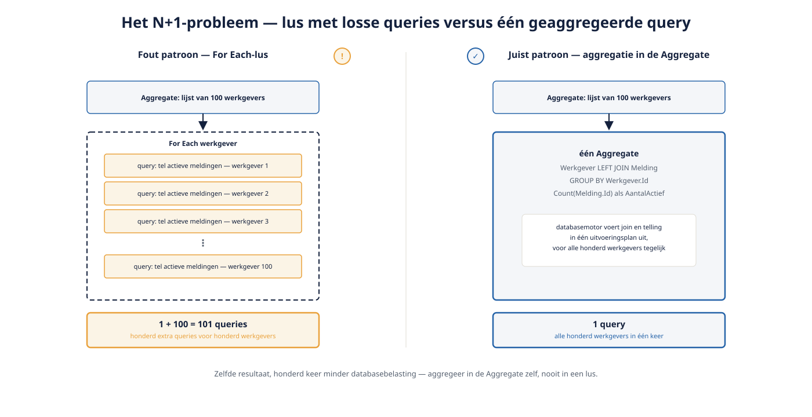

Deel 14 — Performance: aggregates vs SQL, caching, N+1, meten
Slidedeck · Ductus-cursus OutSystems · Niveau 2 — Professional · deel 14 van 30 · 13 slides
Slide 1 — Title: OutSystems: Vakbekwaam
OutSystems: Vakbekwaam
Deel 14 — Performance: aggregates vs SQL, caching, N+1, meten
Slide 2 — Bullets: Waarom nu pas
Waarom nu pas
- Verzuimmeldingen: gematigd volume, geen probleem
- WGP 2.0: heel het werkgeverslandschap
- Wat theoretisch was, wordt nu concreet risico
Slide 3 — Section: Het N+1-probleem
Het N+1-probleem
Slide 4 — Bullets: N records, N extra queries
N records, N extra queries
- Aggregatie in een For Each-lus: fout patroon
- Aggregatie in de Aggregate zelf: correcte oplossing
- Honderd werkgevers → honderd extra queries, of één

Slide 5 — Opdracht: Opdracht 14.1 — Wat is hier het probleem?
Opdracht 14.1 — Wat is hier het probleem?
Drie performance-situaties bij WGP 2.0.
→ Werkboek 14.1
Slide 6 — Section: Caching
Caching
Slide 7 — Bullets: Snel, maar met discipline
Snel, maar met discipline
- Voor traag-wijzigende, veelgevraagde data
- Valkuil: vergeten te invalideren bij wijziging
- Subtiele fout — geen crash, wel verouderde data
Slide 8 — Opdracht: Baan A / Baan B
Baan A / Baan B
A — N+1 bouwen, meten, oplossen in Service Studio
B — Zelfde oefening in ODC Studio
→ Werkboek, eigen baan
Slide 9 — Statement: Meet eerst.
Meet eerst.
Optimaliseer daarna.
Slide 10 — Table: Monitoring: O11 versus ODC
Monitoring: O11 versus ODC
| O11 | ODC | |
|---|---|---|
| Monitoring | Platform-tooling + evt. directe DB-monitoring | Cloud-native observability in de Portal |
Slide 11 — Opdracht: Reflectieopdracht 14.2
Reflectieopdracht 14.2
Waarom is vergeten cache-invalidatie een subtiele fout?
→ Werkboek 14.2
Slide 12 — Bullets: Kernpunten deel 14
Kernpunten deel 14
- N+1: aggregeer in de Aggregate, nooit in een lus
- Caching: gerichte oplossing, altijd met bewuste invalidatie
- Meten vóór optimaliseren, nooit op vermoeden
- ODC: geïntegreerde observability; O11: platform + evt. directe DB-monitoring
Slide 13 — Section: Volgende deel: UI op schaal (2 dagdelen)
Volgende deel: UI op schaal (2 dagdelen)